Connections
Features
OpenCPN can use a number of different data sources for navigation and environment. All data sources are setup using this interface. OpenCPN core functions and plugins depend upon these sources.
Network communication protocols are TCP and UDP. GPSD & Signal K are applications that run over TCP & UDP. In fact to be totally correct,
* GPSD runs over TCP. * Signal K runs over TCP and Web Sockets (Web Sockets is a higher level protocol that runs over TCP). * OpenCPN only supports Signal K over Web Sockets.
OpenCPN has a built-in multiplexer that distributes all incoming and outgoing data. Data from OpenCPN and plugins in the NMEA 0183 format can be sent out to various external consumers, for example, a connected autopilot. The multiplexer can also filter both inputs and outputs of NMEA 0183 data (but not NMEA 2000 or Signal K).
OpenCPN uses a prioritization function for navigation data. Only one source of position data is used at a time. It is "first in, first out", but device data stream priorities may be adjusted by the user. See more details below.
Set-up of incoming and outgoing data from different sources and to different consumers is managed using the connection window. Plugins can also send data internally to OpenCPN’s multiplexer. One example could be VDR (voyage data recorder) plugin. Such data is not handled by this interface.
For further details, see the table of contents below.
Contents
| Sections | Sections |
|---|---|
| Connection Sub-Sections |
|---|
| Quick Start: New User Pages |
|---|
All messages come and go from an internal "bus", and all internal modules have access to all messages. Any message can be received, and possibly re-transmitted according to the configuration established. If the messages get onto the bus, OpenCPN will do the right thing. For example, if it is an AIS message, the AIS module will get the message and act accordingly. Plugins also get all messages.
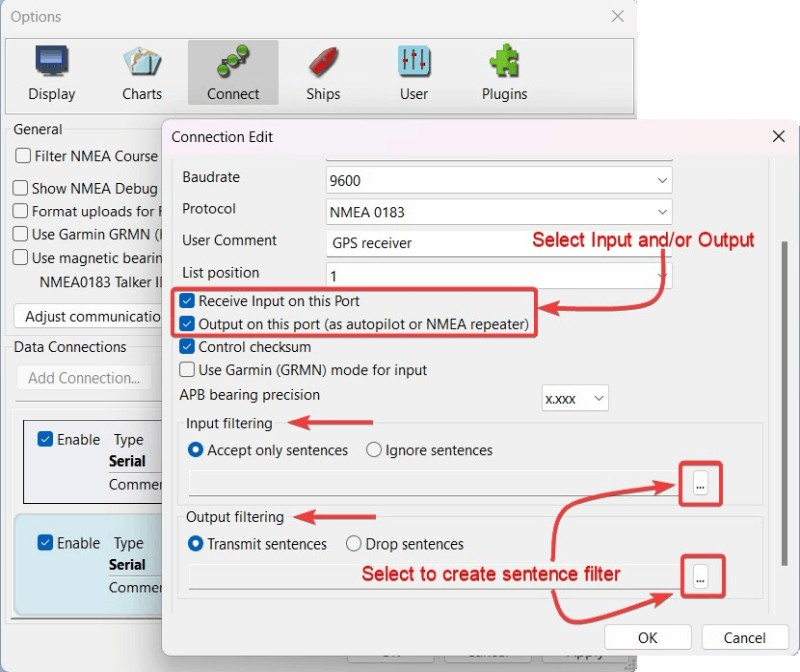
Simple System
This is as simple a connection configuration as possible:
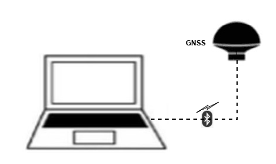
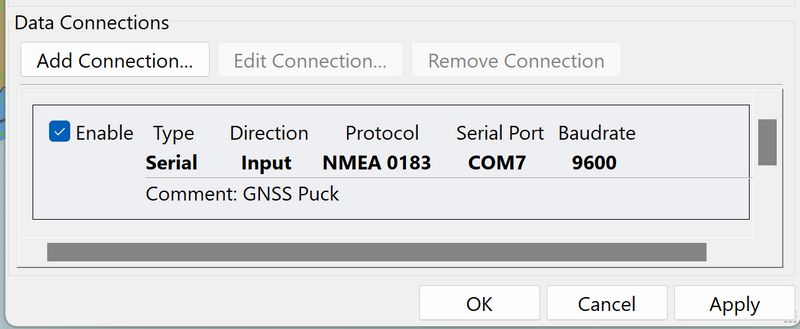
OpenCPN computer connected to a GNSS receiver via a serial connection (USB, Bluetooth, or RS-232).
Simple Extended System
Computer with a USB hub connecting to USB devices, and with a USB gateway to the boat sensors:
-
GNSS receiver puck, USB (or Bluetooth)
-
AIS receiver, USB
-
Instruments, USB to NMEA 0183 or Seatalk1 gateway

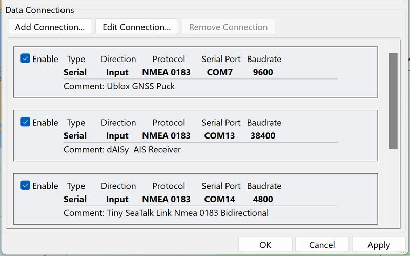
The Simrad term "Joiner" is a passive hub for NMEA 0183 or NMEA 2000. Gateways are devices that translate between two different communications protocols, allowing a boat network to connect with a personal computer or tablet.
A very simple system for starting users and small boats, extended with USB Hub & NMEA 0183 for boat instruments and dAISy AIS. USB Gateway to get that into the Laptop.
Possible Equipment:
-
Ublox GNSS receiver USB puck
-
Daisy AIS receiver USB or Quark QK-A021 AIS receiver USB dongle
-
Seatalk1 Instruments - GadgetPool Tiny Seatalk gateway
-
NMEA 0183 Instruments - Actisense USG-2 gateway
Older Medium Complexity System
This configuration has two connections to OpenCPN:
- OpenCPN computer connected to GNSS receiver via serial link.
-
OpenCPN computer connected to boat network via a NMEA 0183 to USB gateway.
By using the gateway, OpenCPN now has access to all the data from the devices on the NMEA 0183 bus:
-
Chartplotter
-
Wind vane and anemometer
-
Depth sensor
-
Speed sensor (paddlewheel)
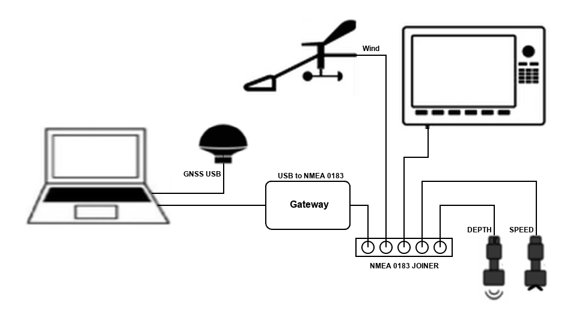
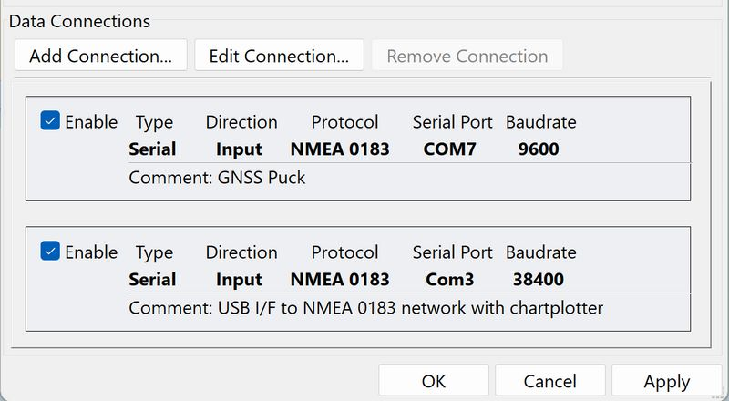
Possible USB to NMEA 0183 Gateways for the above configuration:
-
Actisense USG-2 USB to Serial Gateway, connects a PC to NMEA 0183 network.
-
Yacht Devices NMEA 2000 USB Gateway YDNU-02, supports NMEA 0183 and has USB.
-
ShipModul MiniPlex-3Wi, two NMEA 0183 outputs or Seatalk1, a USB port & a WiFi interface
-
Quark QK-A024 AIS Receiver with NMEA Multiplexer + NMEA 0183 + WiFi
AIS + USB
Newer Medium Complexity System
This configuration is a fully-featured NMEA 2000 boat network, with AIS and autopilot as well as the usual sensors for a vessel. In addition, there is a boat network WiFi link that other devices, such as an Android tablet running OpenCPN, may access, providing mobility within the vessel. In spite of the wealth of sensors, each computing platform has a single interface connection to OpenCPN.
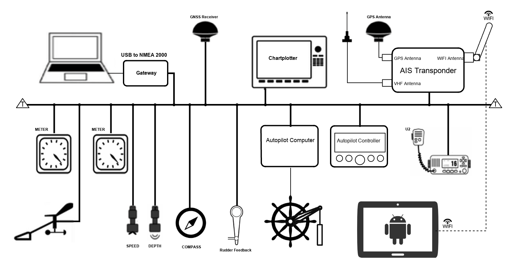
Computer Connection Setup
Laptop Computer connected to NMEA 2000 via Network UDP input/output NMEA
2000 Gateway.
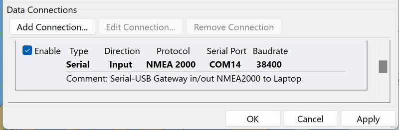
Android Table Connection Setup
Example: Main computer is below deck, an Android tablet (like a Samsung
Galaxy Tab Active) under the dodger.
Android tablet connects to NMEA 2000 via the WiFi Network, TCP input/output NMEA 2000 Gateway. The input port is set as UDP with the WiFi gateway’s sending address, allowing all the NMEA 2000 bus traffic to reach the tablet’s OpenCPN. The output port is set to TCP with the local subnet’s broadcast address, allowing the tablet to issue information to the Autopilot.
The TCP Output (could be UDP Output) is used because we wanted the autopilot messages to stay within the local private network. Address 192.168.1.255 accomplishes this.
The autopilot can be controlled by a tablet from OpenCPN running a specific NMEA 2000 autopilot plugin intended for a specific manufacturer, via WiFi (in this case, through the Vesper AIS device). Both the autopilot control head and the tablet can send controls to the autopilot.
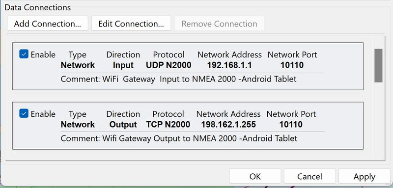
Possible USB <→ NMEA 2000 Gateways are listed in Connect to > NMEA 2000
Use of UDP Output for Broadcasting
OpenCPN on the receiving device receives and shows all info from input ports on the sending device, via the broadcast output ports and the Localhost output port.
-
The receiving device will even receive data from the VDR plugin, if it’s running.
-
Thus all input sources are merged together and are also available to transmit to an external computer. Any computer on board can be used as a repeater to the main device!
-
This avoids creating infinite data loops.
-
UDP output and input is a possible configuration, but is not generally desirable. If a broadcast connection is read/write, all data written out will be read back leading to the potential for data loops that will "flood the bus".
-
To avoid this, the priority of any read/write broadcast connection should be set lower than that of any other interface on which OpenCPN receives data for re-distribution over that interface.
-
For most purposes, setting a broadcast connection to either read or write is the preferable solution.
-
There is no advantage to using a broadcast address on the local network with just a few computers. It’s as easy to just specify the addresses of the receiving computers as outgoing connections on the transmitting computer. The "receivers" specify the "transmitter" as the address for a connection.
In real life, a common setup will include input from GPS and AIS, and output to an autopilot.
If your GPS produces GPRMC, then this will be automatically sent to the autopilot.
-
Everything on the internal multiplex bus will be sent to the output port that the autopilot is connected to, even if a route is inactive.
-
If a route is active, OpenCPN will create and send NMEA 0183 (EC)RMC sentences to output data ports.
-
The only reason OpenCPN "synthesizes" an ECRMC sentence is to cover those odd cases when there is no other source of RMC in the system, and the Autopilot wants magnetic variation, SOG, etc. This might be the case if an older GPS produces GPGLL alone, for instance, which has no magnetic variation. Since there is no "new" information in the transmitted, OpenCPN would synthesize ECRMC.
-
The autopilot might be complaining that it is getting RMC information from two different talkers (GP and EC) at the same time, and cannot decide what to do. The easiest solution if it doesn’t like the ECRMC is to filter it out of the output stream of the port connected to the autopilot. Or, choose a filter to allow only GPRMC and ECRMB for this port.
Filter NMEA Course and Speed Data
The filter provides a rolling average of COG/SOG, with configurable sampling period. This feature is useful, for example, if you find that course and speed from the GPS is varying erratically due to the sea state. The Dashboard plugin is not affected by this setting - COG and SOG are updated about once per second.
Show NMEA Debug Window
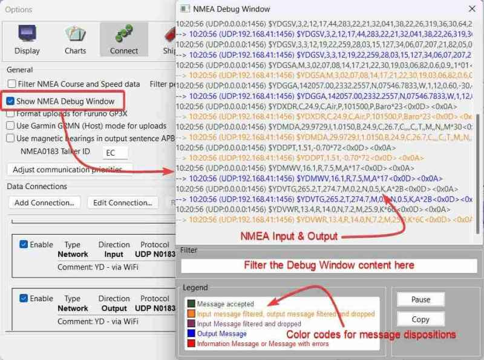
If you check this box, you will get a window that shows the NMEA data sentences into or out from OpenCPN. This is immediately useful to check if a particular source device port is correctly setup and is receiving data. The Debug Window will show messages from all enabled ports, serial or network, and all protocols (NMEA 0183, NMEA 2000, Signal K). Messages from GPSD or the Voyage Data Recorder plugin will also show up in the Debug Window.
In the picture above we can also see color-coding at work.
-
Black: input message accepted
-
Ocher: input message filtered, or output message filtered and dropped
-
Burgundy: input message filtered and dropped
-
Blue: output message transmitted
-
Red: information message, or message with error(s) in transmit
If there are NMEA sentences in the Debug Window, then OpenCPN has opened the port configured in the Data Connections. Note: the source of each NMEA sentence is printed after the time stamp on each line.
If your GPS port is configured, and there is no "red" boat, then the only reasons are: no GPS fix was received from a GNSS device or the GNSS device has sent an incorrect sentence configuration.
Filter: The NMEA Debug Window content can be filtered to show only those messages containing a text string, e.g. 127245 (to show NMEA 2000 PGN 127245), GPRMC (to show NMEA 0183 sentence GPRMC), rudder (to show any type of sentence with the word "rudder"), etc. Filtering the window content does not change the data in/out of OpenCPN.
Known issues: The Pause button only works if OpenCPN’s Options dialog is closed. In Linux, the Debug Window can only be closed by unticking the Show NMEA Debug Window checkbox, unless the OpenCPN’s Options dialog is closed.
Note: Connections Priority change messages will also be printed to the NMEA Debug Window. AIVDM messages are both dropped and appear as a blue Output message because there is more than one source for this message, and the filter just applies to one source.
Have a look at the page ./../nmea0183.html to see which messages are understood by OpenCPN. OpenCPN generally does not care about the Talker ID (the first two letters in the message type). For $GPGGA above, GP is the talker ID (the GPS), sending a GGA = position message, for example. At the end of each sentence there is a "*" followed by a calculated checksum.
To see all messages it’s important to close the Options dialog completely, while leaving the NMEA Debug window open. Some messages, e.g. the ECAPB sentences, will not appear while the Connections dialog box is open because autopilot output is disabled during this time.
For simple NMEA data stream debugging, add the following to your opencpn.ini file under [Settings] add a line:
DebugNMEA=1500
This will send up to 1500 debug messages pertaining to NMEA traffic to the opencpn.log.
Format uploads for FurunoGP3Xinputfiltering
If the special Furuno GPS protocol is needed, tick this box. The reason is that Furuno uses their own version of NMEA for uploading routes. Furuno GPS users take note. It is now allowed to use a numeric, two digit OpenCPN route name (e.g. 10, 21, etc).
Use Garmin GRMN (Host) mode for uploads
Older Garmin GPS-Map devices used a proprietary, binary communication protocol that is not NMEA-compliant. To support the sending of routes and waypoints to these Garmin devices, make sure that this box is ticked.
Most modern Garmin GPS chartplotters now support NMEA 0183, specifically the the WPL (Waypoint List) sentence used for transferring routes and waypoints. With these devices, the checkbox may be left unchecked.
Detailed Explanation
When OpenCPN IS configured to Use Garmin (GRMN) Mode for Input, it does a couple of things: firstly after opening the serial or USB port, it sends a command to the GPS to determine its capabilities (different models use different structures for PVT (Position, Velocity, Time), waypoints, routes & tracks and use different protocols for transfers). OpenCPN then sends the command to the Garmin GPS to start sending PVT data. Upon reception of the PVT data, OpenCPN decodes the binary data, updates OpenCPN’s position and generates an NMEA 0183 RMC sentence, which is can be seen in the NMEA Debug Window.
When OpenCPN IS configured to Use Garmin GRMN (Host) mode for uploads, when you send a waypoint or a route to the GPS, OpenCPN does three things: Firstly it sends the Stop PVT command to the Garmin GPS, it then constructs the waypoint or route data and sends it to the Garmin GPS. There are no NMEA 0183 sentences generated or transmitted, so nothing is seen in the NMEA Debug Window. Finally, it sends the Start PVT command to resume receiving position fixes.
Use magnetic bearings in output sentence ECAPB
Some autopilots, among them Simrad, require navigational bearings contained in the APB sentences to be transmitted as magnetic bearings rather than as true bearings (OpenCPN’s default).
Adjust Communication Priorities..
Refer to Adjust Communication Priorities .
Within each data type, e.g. Heading, higher position equals higher priority. The priority is set for each NMEA sentence individually. As long as a higher priority stream is available, it’s used. If this fails, the next stream in line with lower priority is used until a higher priority stream appears. The present filter does not handle the case in which the same information is received from different sentence types. For instance, GPGLL and GPRMC both contain the position information. The last received of either message will be used.
Data Connections - Add and Remove
Two Buttons, Add Connection… and Remove Connection…, are the key to the Connect tab.
The Enable checkbox at the start of each connection line is handy to maintain currently unused connections. Tick or un-tick, and then select "Apply", to activate the setting.
A connection can be used for input and output at the same time, with the reservation that they have to use the same Baud rate. For more details, read on.
When selecting Add Connection… two basic choices are given, a serial or a network connection.
Add a Serial Connection
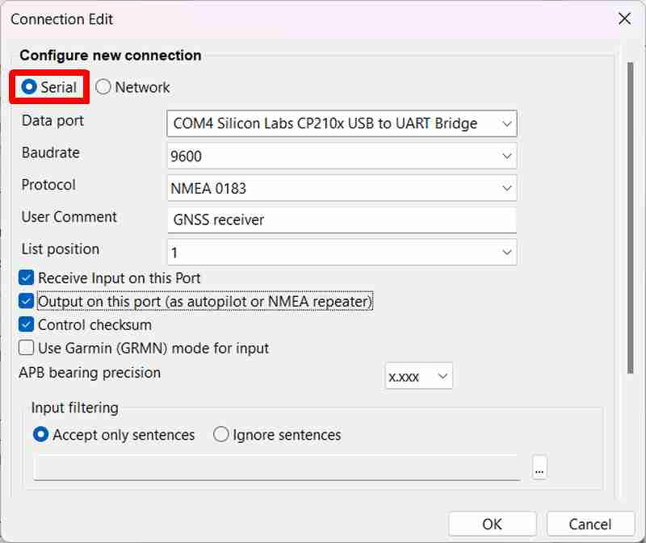
DataPort: Pick a port by selecting the dropdown list expander () on the right side of the field. If the port you are looking for does not appear in the selection, write the correct port yourself in this field, e.g. "COM4".
Baudrate: This is normally 4800 or 9600 for GPS and 38400 for AIS, but check the manufacturer documentation for the connected device. It’s important to get this right and not just guess, otherwise the data will not flow.
Protocol: Either NMEA 0183 or NMEA 2000, depending upon the device type. Check the manufacturer documentation for the connected device.
List Position: The List position value orders the connections list, if desired. Lower numbers are listed before higher numbers.
Control Checksum: At the end of each NMEA sentence is a checksum, that makes sure that sentences are correctly received. This box is ticked by default, as OpenCPN calculates the checksum and compares it to the received checksum. Only sentences with a valid checksum are passed through. Un-ticking may help, if an application calculates checksums incorrectly or if the checksums are missing.
Use Garmin (GRMN) mode for input: Make sure that this box is ticked if you have a Garmin GPS, because Garmin uses their own serial protocol.
Receive input on this Port: Most serial ports will be configured as input ports. It might be the case that OpenCPN is used to send data to a ship’s network through a serial device, such as an Actisense NGT-1. In this case a separate port might be setup as Output only. If the connection will only be used to output to other devices it should not be ticked. See more below.
Output on this port (as Autopilot or NMEA repeater): Tick this box if the connection will be used for output. Common cases are to send NMEA 0183 sentences to an Autopilot, or to repeat NMEA 0183 sentences with filtering, or to transfer serial data sources onto the local network. Example: Filtering can resolve an issue with talker ID, in which some "temperamental" devices which should accept given sentences irrespective of the talker ID, in fact accept GPRMC but not ECRMC.
Note: Output for serial ports with NMEA 2000 protocol is not supported.
APB bearing precision is greyed out unless "Output on this port" is checked. APB is the NMEA 0183 sentence "Autopilot Sentence 'B'". The precision can be set between 0-4 decimal places (3=default). Some autopilots require different precision than the default to work. Check the manufacturer documentation for the autopilot.
Note: The APB bearing precision setting is applied to:
* //CrossTrackErrorMagnitude// * //BearingOriginToDestination// * //BearingPresentPositionToDestination// * //HeadingToSteer//
they can accept in the APB message. For all other messages, and internally, the precision is not changed. There is no change to the XTE message as that was not requested at the time. "XTE - Measured cross track error" NMEA 0183 message is not adjusted by the APB bearing precision setting. Opencpn.ini setting is NMEAAPBPrecision
Linux Serial Connections
Please refer to Quick Start Guide > Connect to > Serial + USB
GPSD connection
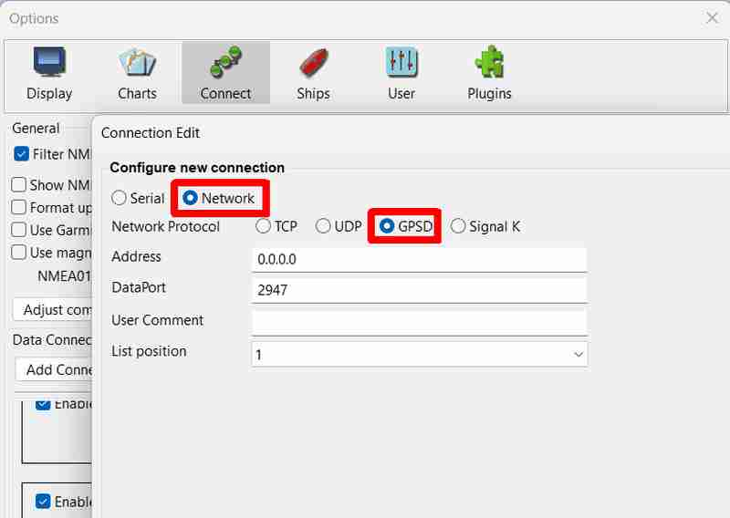
When connecting to GPSD, running on your local computer, use the settings shown above.
Connections Filter
For each source line in the data connection windows, it’s possible to specify exactly which NMEA 0183 sentences to receive, and which ones to drop. Similarly it’s possible to control exactly which NMEA 0183 sentences to send out to, for example, an autopilot.
Note: Connection Filters do not apply to NMEA 2000 and Signal K data.
The applied filters for each connection are stated in the connection’s Data Edit window. The default for a connection is no filters at all.
-
The filters apply to both the core program and the plugins.
Filtering can be observed in real time, through color coding in the Debug Window.
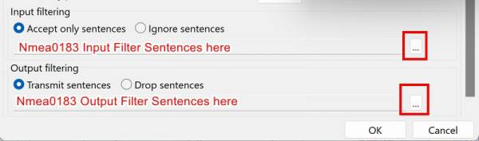
Accept only sentences: Either base your filtering on which sentences to accept or which to ignore.
Ignore sentences: Same as above. To select filters, press the button. The dialog below becomes available.
Standard Receive Filters
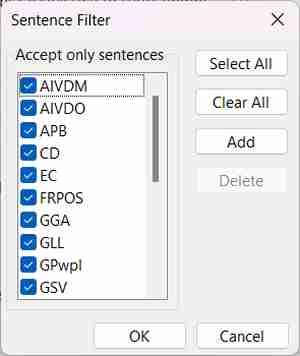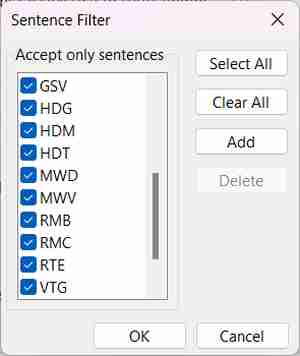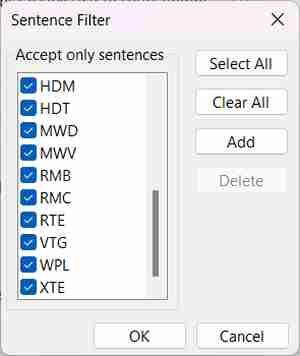
Standard Transmit Filters
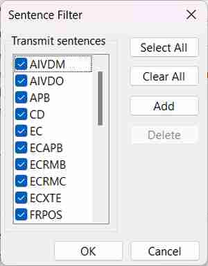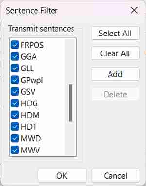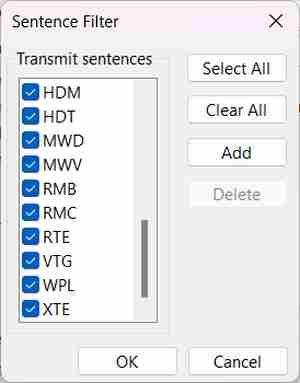
A lot of NMEA 0183 sentences are listed. You may have to add a NMEA 0183 sentence that is not in the list. Just tick the box to select/de-select a sentence. Select All or Clear All are also available. For sentences not listed press Add, and enter a new NMEA 0183 sentence.
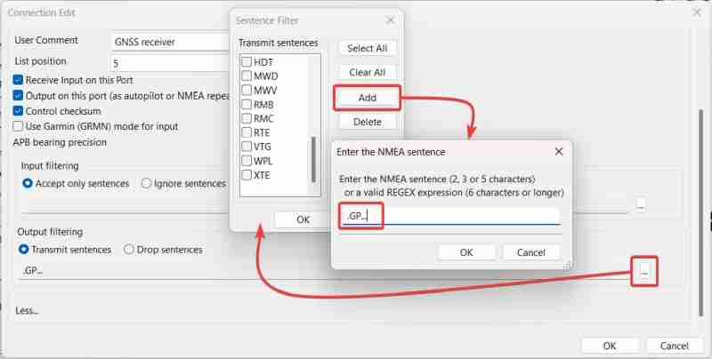
Your entry must conform to the rules shown in the add NMEA 0183 sentence entry form, namely:
-
2 characters to filter by talker IDs, e.g. "GP", or "AI".
-
3 characters to filter by sentence types, e.g. "RMC", "DBT", "ABP".
-
5 characters to filter by talker ID & sentence type, e.g "GPRMC", or "AIVDM".
-
valid REGEX expression matching the 6 characters of <$><talker ID><sentence>, e.g. to filter $xxGSV, you could use "…GSV", or ".{3}GSV", or "\$..GSV". Or to obtain only GLONASS GSV sentences, use "..LGSV".
Note: Test your REGEX expression using Regex101
When you are finished, select OK, your new entry will appear at the bottom of the list of NMEA 0183 sentences to filter. It will already be selected, so just press OK until you are back in the original Connections tab. Now press Apply. The implemented filtering should now be visible on the connection line.
To delete a custom filter, scroll to the bottom of the list, select the filter and select Delete.
For more, see below.
Input Filtering
| Another scenario where output filtering is required is forwarding AIS messages to different networks or to other consumers like AIShub. One will just send the AIS messages and not the complete data stream. |
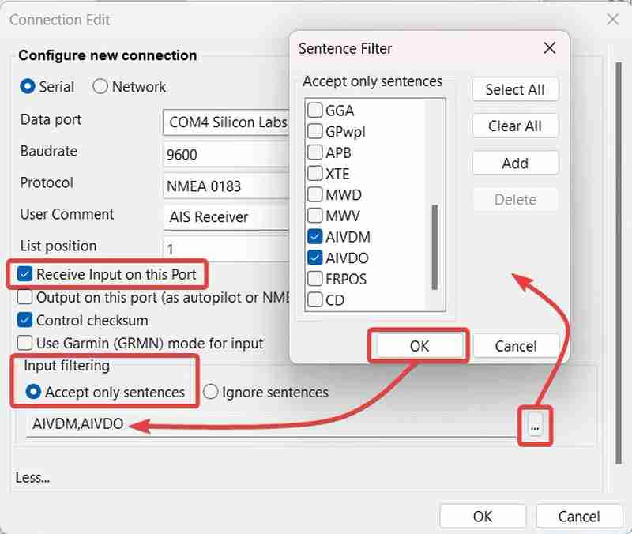
Example 1
An input filter that prevents an AIS transceiver from providing duplicate location information by accepting only GNSS sentences.

Example 2
An input filter that allows an AIS transceiver to function as a GNSS receiver by ignoring AIS sentences.
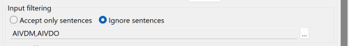
Example 3
An input filter when "Clear All" is selected with Filter Menu open, hen Closed.
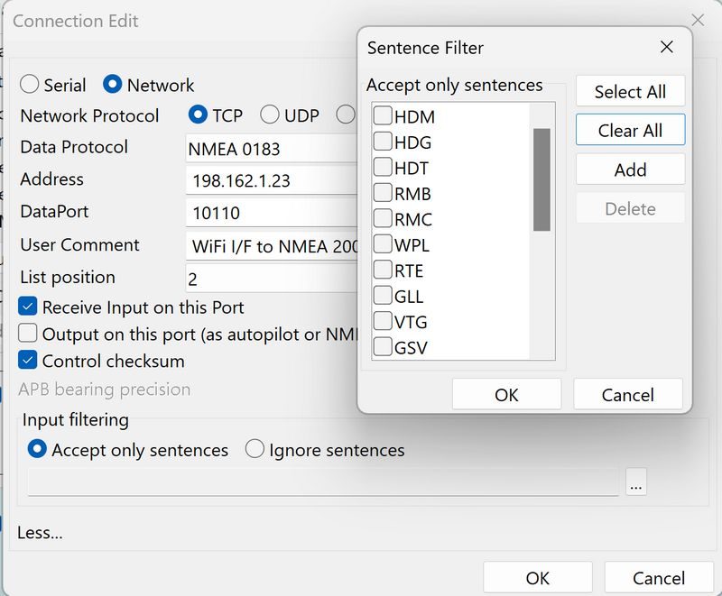
There are no sentences shown on the message line. When filter message line is empty, "no filter" is applied and all available messages are sent.
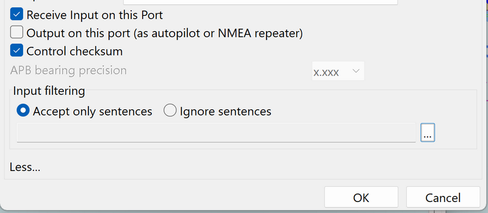
-
Input Filtering - Accept only Sentences - Blank Filtering Line - All sentences will be accepted.
-
Input Filtering - Ignore Sentences - Blank Filtering Line - No sentences will be ignored.
Output Filtering
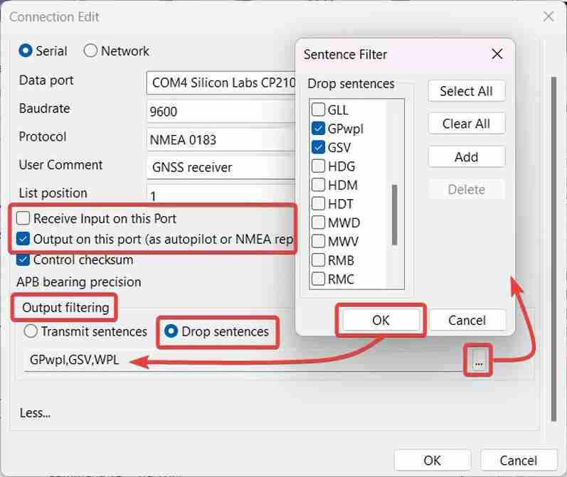
Example 2
An output filter that drop three sentences and transmits all the rest.
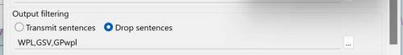
Note: It is good practice to send only the sentences that are definitely needed to avoid data loops and "flooding the bus".
Example 3
An output filter when "Clear All" is selected with Filter Menu open, then Closed.
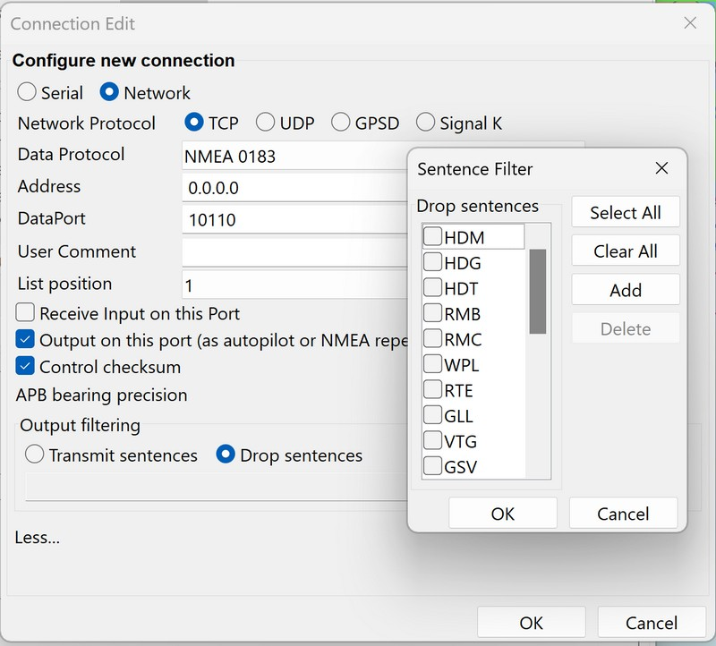
There are no sentences shown on the message line. When filter message line is empty, no filter is applied and all available messages are sent.
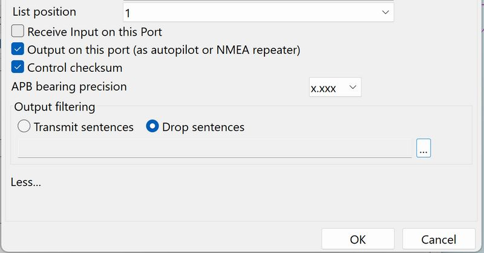
-
Output Filtering - Transmit Sentences - Blank Filter Line - All sentences will be sent.
-
Output Filtering - Drop Sentences - Blank Filter Line - No sentences will be dropped.